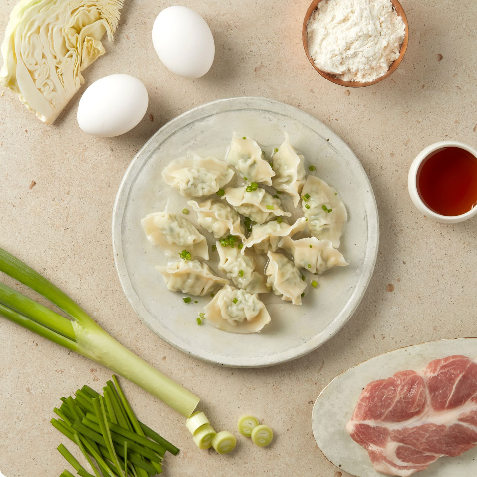
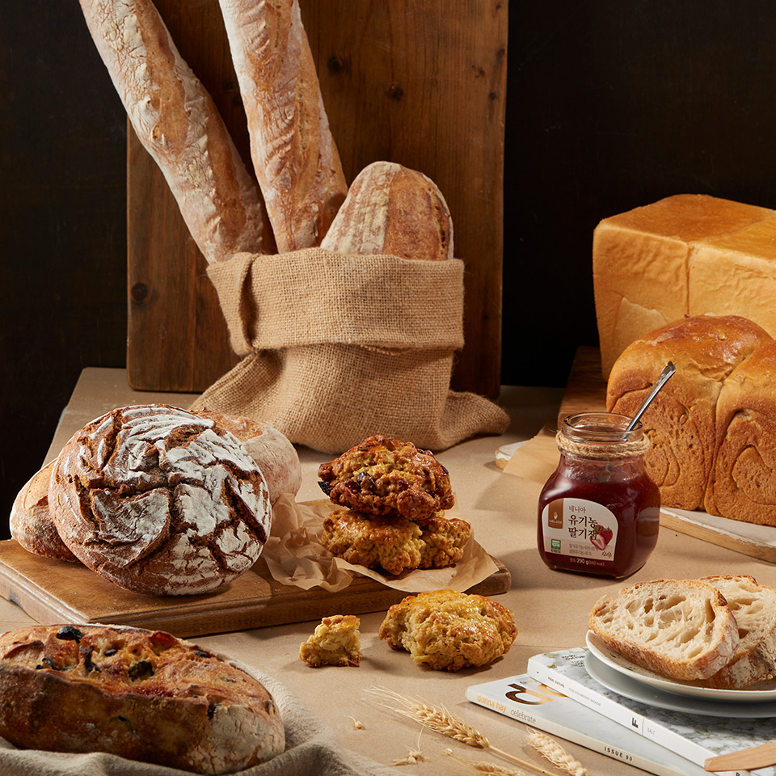
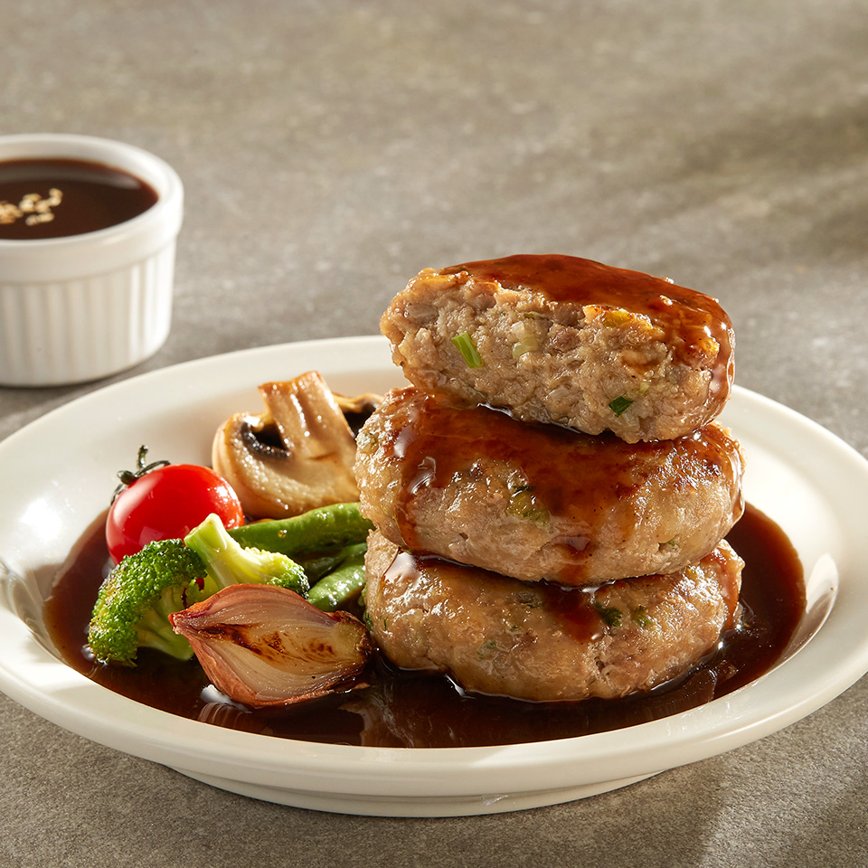
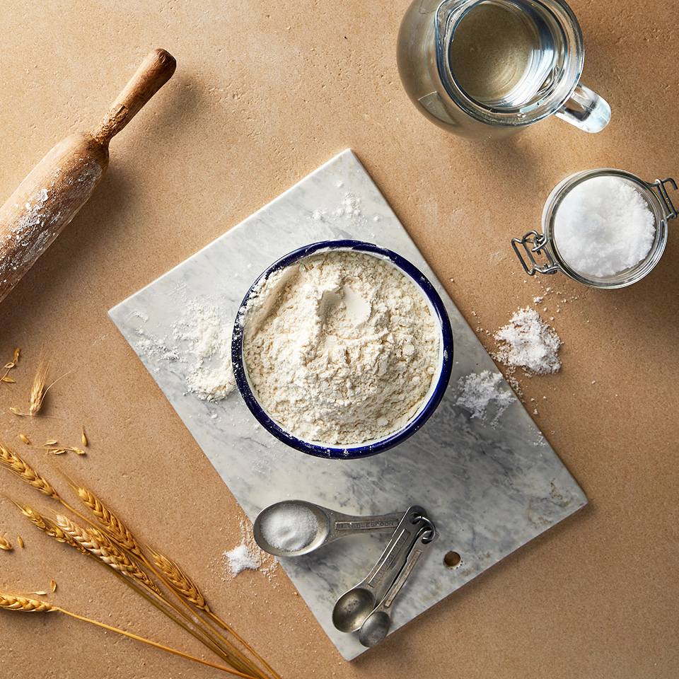
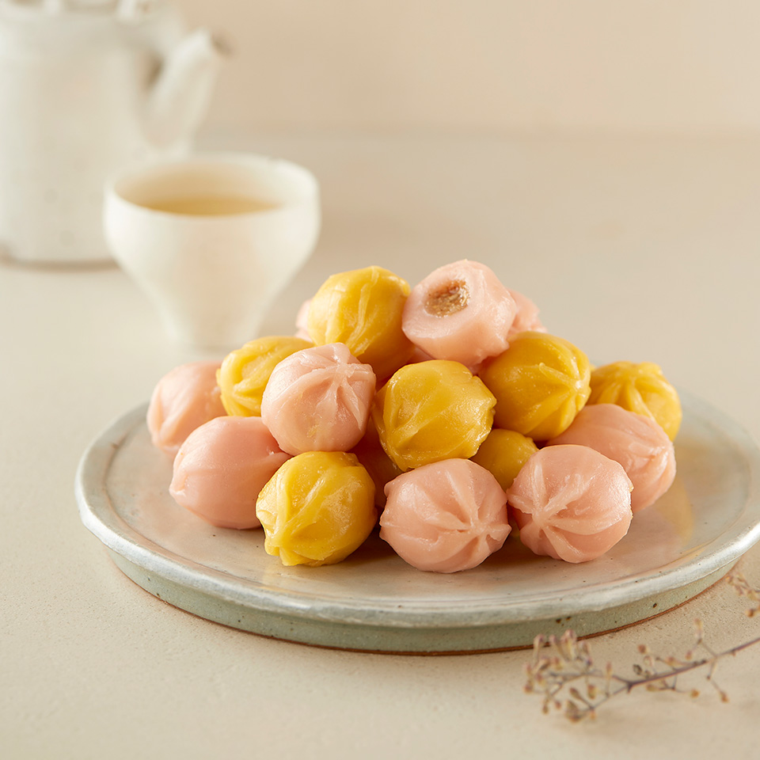
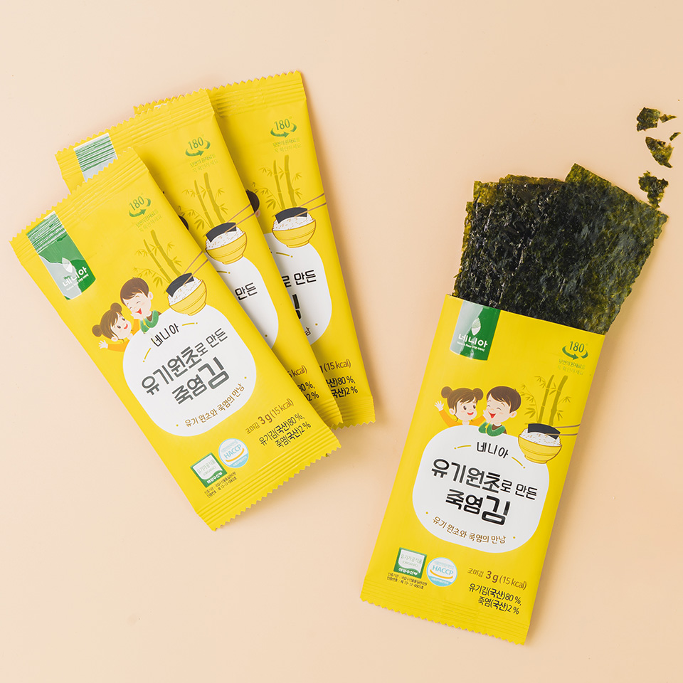
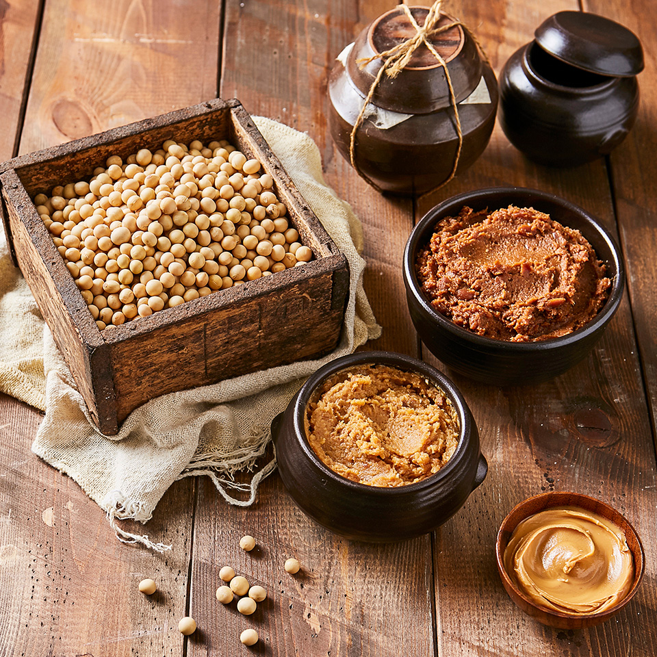

네니아
About Us
더 나은
사회 가치를
공유하고자
노력합니다.
‘지속 가능한 건강한 삶’에 어떻게 기여할 수 있는가?
그리고 그것을 위해서 어떻게 실행하는가?
우리 아이들이 푸르고 건강하게
자라나도록 좋은 식품을 만듭니다.
-
대표상품
네니아의 대표상품을
소개합니다 -
 우리밀 만두
무농약 우리밀로 만든 만두피에 무항생제 돼지고기,
국산 생야채로 만든 소를 듬뿍 넣어 만들었습니다.
마지막 참기름 한방울까지 엄선된 국산 재료를 사용합니다. -
 우리밀 베이커리 / 잼
무농약 우리밀과 국산 우유로 만든 천연버터로 만든 베이커리에
국산 재료들로 다채로움을 더했습니다. -

음료 / 아이스크림
국산 과일만을 착즙한 주스, 무항생제 우유와
국산 과일로 만든 요구르트, 유기농 우유로 만든 유기농 아이스크림,
자연재료로 정직하게 만들었습니다. -
 육가공
무항생제 한우 사골 100%로 만든 농축액과 무항생제 돼지,
오리에 천연 향신료로 맛과 향을 더했습니다.
공정이 더 늘어나고 번거롭더라도 재료 본연의 맛을 담아냈습니다. -
 우리밀가루 / 우리밀면
전라도와 경상도 청정지역에서 재배 된 무농약 우리밀과
무농약 쌀로 만들었습니다.
유기농, 무농약 우리밀을 훈증처리 없이 저온저장고에
보관하여 제품 생산시 원재료로 사용하고 있습니다. -
 떡
무농약 멥쌀과 찹쌀에 자연에서 온 단호박, 백년초, 쑥 등으로
재료 본연의 색과 맛을 냈습니다.
냉장온도에서 굳지 않는 기술과 냉동떡 복원기술로 떡을 만듭니다. -
 찬류
우리바다에서 온 국산 유기원초와 국산 생선살 100%로 유기농 김과 어묵을 만듭니다.
우리땅에서 자란 콩, 도토리, 녹두로 만든 전통방식 그대로의 두부, 묵입니다. -
 소스 / 전통장
국산 토마토, 생크림, 고춧가루 등 국산 원료를 전통 방식
그대로 느리게 만들었습니다.
정성과 시간이 만든 깊은 맛입니다.